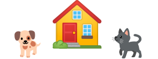

Encuentra mascotas en adopción
Un hogar, una mascotaMás información

¿Cómo puedo adoptar una mascota?

Preguntas frecuentes

¿Cómo dar en adopción?
Formar hogares con mascotas amadas, es nuestra misión